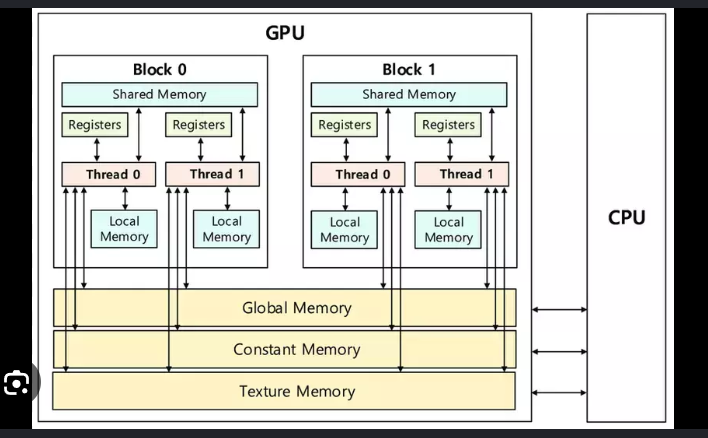

Matrix Multiplication:
work :
- Understanding strategies
- CPU : Codes of step by step learning
- GPU : Codes for checking, running, optimizing
- Parallelism : GPU structure
1. Understanding Strategies:
Classical method is the n-cube: loop order is i →j→k
a. Loop Order Change : keep loop order i→k→j
helps by reusing some numbers, makes memory access a bit less
b. Blocking/TIling
making matrix blocks, and using a block fully, then calling another one
c. Transposing the matrix B
this costs once, when B is gonna be transposed. However, row wise access is faster than the column wise one. Therefore, fruitful!
d. Packing
custom arranging the matrix, so cpu
does not : read, jump, read, jump
does : read, read, read, read
e. Vectorization / SIMD
make a vector of values, perform 1 command once on the whole vector
f. Register use
store some things in the registers
g. Microkernals
specific, fixed algo executers! V. Fast at tiny block multiplications!
h. Parallelism
i. Block based Parallelism : Most used
each thread computes only a part of the resulting matrix, so it calls only blocks of the A and B and works
works coz : Blocking better, balanced load balancing, no interference
j. Threading the work across multiple cores of the CPU
also an algo optimization strategy
2. CPU Codes
1. Single Worker Function With 2 Threads
#include <iostream>
#include <vector>
#include <thread>
using namespace std;
vector<int> arr = {1, 2, 3, 4, 5, 6, 7, 8};
void worker(int start_index, int end_index, int& result)
{
result = 0;
for (int i = start_index; i < end_index; i++)
{
result += arr[i];
}
}
int main()
{
int n = arr.size();
int sum1 = 0;
int sum2 = 0;
thread t1(worker, 0, n / 2, ref(sum1));
thread t2(worker, n / 2, n, ref(sum2));
t1.join();
t2.join();
int total = sum1 + sum2;
cout << "Sum 1: " << sum1 << endl;
cout << "Sum 2: " << sum2 << endl;
cout << "Total: " << total << endl;
return 0;
}
2. First Parallel Matrix Multiplication (Hardcoded 2 Threads)
#include <iostream>
#include <vector>
#include <thread>
using namespace std;
vector<vector<int>> A = {
{1, 2},
{3, 4}
};
vector<vector<int>> B = {
{5, 6},
{7, 8}
};
vector<vector<int>> C(2, vector<int>(2, 0));
void worker(int start_row, int end_row)
{
int cols_B = B[0].size();
int cols_A = A[0].size();
for (int i = start_row; i < end_row; i++)
{
for (int j = 0; j < cols_B; j++)
{
for (int k = 0; k < cols_A; k++)
{
C[i][j] += A[i][k] * B[k][j];
}
}
}
}
int main()
{
int rows = A.size();
thread t1(worker, 0, rows / 2);
thread t2(worker, rows / 2, rows);
t1.join();
t2.join();
cout << "Result matrix:\n";
for (auto row : C)
{
for (auto value : row)
{
cout << value << " ";
}
cout << endl;
}
return 0;
}
3. Reusable Worker (No dependency or any fixed Globals ):
worker will use whatever matrix and rows u pass, none else
#include <iostream>
#include <vector>
#include <thread>
using namespace std;
void worker(
const vector<vector<int>>& A,
const vector<vector<int>>& B,
vector<vector<int>>& C,
int start_row,
int end_row)
{
int cols_B = B[0].size();
int cols_A = A[0].size();
for (int i = start_row; i < end_row; i++)
{
for (int j = 0; j < cols_B; j++)
{
C[i][j] = 0;
for (int k = 0; k < cols_A; k++)
{
C[i][j] += A[i][k] * B[k][j];
}
}
}
}
int main()
{
vector<vector<int>> A = {
{1, 2},
{3, 4}
};
vector<vector<int>> B = {
{5, 6},
{7, 8}
};
int rows_A = A.size();
int cols_B = B[0].size();
vector<vector<int>> C(rows_A, vector<int>(cols_B, 0));
thread t1(worker, cref(A), cref(B), ref(C), 0, rows_A / 2);
thread t2(worker, cref(A), cref(B), ref(C), rows_A / 2, rows_A);
t1.join();
t2.join();
cout << "Result matrix:\n";
for (auto row : C)
{
for (auto value : row)
{
cout << value << " ";
}
cout << endl;
}
return 0;
}
4. Dynamic Thread Creation
#include <iostream>
#include <vector>
#include <thread>
using namespace std;
void worker(
const vector<vector<int>>& A,
const vector<vector<int>>& B,
vector<vector<int>>& C,
int start_row,
int end_row)
{
int cols_B = B[0].size();
int cols_A = A[0].size();
for (int i = start_row; i < end_row; i++)
{
for (int j = 0; j < cols_B; j++)
{
C[i][j] = 0;
for (int k = 0; k < cols_A; k++)
{
C[i][j] += A[i][k] * B[k][j];
}
}
}
}
int main()
{
vector<vector<int>> A = {
{1, 2},
{3, 4}
};
vector<vector<int>> B = {
{5, 6},
{7, 8}
};
int rows_A = A.size();
int cols_B = B[0].size();
vector<vector<int>> C(rows_A, vector<int>(cols_B, 0));
int num_threads = 2;
vector<thread> threads;
int rows_per_thread = rows_A / num_threads;
for (int i = 0; i < num_threads; i++)
{
int start_row = i * rows_per_thread;
int end_row;
if (i == num_threads - 1)
{
end_row = rows_A;
}
else
{
end_row = start_row + rows_per_thread;
}
threads.push_back(
thread(
worker,
cref(A),
cref(B),
ref(C),
start_row,
end_row
)
);
}
for (auto& t : threads)
{
t.join();
}
cout << "Result matrix:\n";
for (auto row : C)
{
for (auto value : row)
{
cout << value << " ";
}
cout << endl;
}
return 0;
}
5. Automatic CPU Thread Count
int num_threads = thread::hardware_concurrency();
if (num_threads == 0)
{
num_threads = 2;
}
num_threads = min(num_threads, rows_A);
3. GPU Codes
a. checking GPU
#include <iostream>
#include <cuda_runtime.h>
using namespace std;
int main()
{
int gpu_count;
cudaGetDeviceCount(&gpu_count);
cout << "GPUs found: "
<< gpu_count
<< endl;
return 0;
}
b. First GPU thread
#include <iostream>
#include <cuda_runtime.h>
using namespace std;
// GPU function (kernel)
__global__ void helloGPU()
{
printf("Hello from GPU!\n");
}
int main()
{
// Launch kernel
helloGPU<<<1, 1>>>();
//This means: <<< number_of_blocks , threads_per_block >>>
//will act like a single thread
// Wait for GPU to finish
cudaDeviceSynchronize();
cout << "Done\n";
return 0;
}
c. count and type in the collab
%%writefile gpu_check.cu
#include <iostream>
#include <cuda_runtime.h>
using namespace std;
int main()
{
int gpu_count = 0;
cudaError_t status =
cudaGetDeviceCount(&gpu_count);
if (status != cudaSuccess)
{
cout << "CUDA error: "
<< cudaGetErrorString(status)
<< endl;
return 1;
}
if (gpu_count == 0)
{
cout << "No GPU detected"
<< endl;
return 1;
}
cudaDeviceProp gpu;
cudaGetDeviceProperties(&gpu, 0);
cout << "GPUs found: "
<< gpu_count
<< endl;
cout << "GPU Name: "
<< gpu.name
<< endl;
return 0;
}!nvcc gpu_check.cu -o gpu_check
!./gpu_check
d. Many GPU threads
%%writefile gpu_threads.cu
#include <iostream>
#include <cuda_runtime.h>
// GPU kernel
__global__ void printThreadID()
{
int id = threadIdx.x;
printf("Hello from GPU thread %d\n", id);
}
int main()
{
// Launch 1 block with 8 threads
printThreadID<<<1, 8>>>();
cudaDeviceSynchronize();
return 0;
}!nvcc gpu_threads.cu -o gpu_threads
!./gpu_threads
e. First parallel Matrix Multiplication
%%writefile matrix_mul.cu
#include <iostream>
#include <cuda_runtime.h>
using namespace std;
// GPU kernel
__global__ void matrixMultiply(
int* A,
int* B,
int* C,
int N)
{
int row = threadIdx.y;
int col = threadIdx.x;
int sum = 0;
for (int k = 0; k < N; k++)
{
sum +=
A[row * N + k] *
B[k * N + col];
}
C[row * N + col] = sum;
}
int main()
{
const int N = 2;
int A[N * N] =
{
1, 2,
3, 4
};
int B[N * N] =
{
5, 6,
7, 8
};
int C[N * N];
int *d_A, *d_B, *d_C;
int size = N * N * sizeof(int);
// Allocate GPU memory
cudaMalloc(&d_A, size);
cudaMalloc(&d_B, size);
cudaMalloc(&d_C, size);
// CPU -> GPU
cudaMemcpy(
d_A,
A,
size,
cudaMemcpyHostToDevice
);
cudaMemcpy(
d_B,
B,
size,
cudaMemcpyHostToDevice
);
// Launch 2x2 GPU threads
dim3 threadsPerBlock(N, N);
matrixMultiply<<<1, threadsPerBlock>>>(
d_A,
d_B,
d_C,
N
);
cudaDeviceSynchronize();
// GPU -> CPU
cudaMemcpy(
C,
d_C,
size,
cudaMemcpyDeviceToHost
);
// Print matrix
cout << "Result matrix:\n";
for (int i = 0; i < N; i++)
{
for (int j = 0; j < N; j++)
{
cout
<< C[i * N + j]
<< " ";
}
cout << endl;
}
cudaFree(d_A);
cudaFree(d_B);
cudaFree(d_C);
return 0;
}!nvcc matrix_mul.cu -o matrix_mul
!./matrix_mul
Understanding Parallelisms
1. GPU structure
GPU is the Factory, inside :
Each workshop is called an SM (Streaming Multiprocessor) and it contains many workers.
Parallelism ≠ necessarily merging results.
Each workshop has many workers, similarly SM has many CUDA cores. So GPU cores are spread among the SMs in Small groups called WARPS.
a. Warps: a group of 32 threads that execute together.
set of workers where all workers start doing same thing under 1 common instruction.
All 32 workers receive the same instruction at the same time. The GPU loves this because one instruction can drive many workers.
The important thing each worker owns is:
- Current instruction position
- Identity
So when the instruction says: c[i] = a[i] + b[i];
each worker plugs in its own identity:
- Worker 0 -> i = 0
- Worker 1 -> i = 1
- Worker 2 -> i = 2
- …
In CUDA:
Thread = job
CUDA Core = worker
A thread is a piece of work you want done and A CUDA core is hardware that executes instructions.
A block is just a collection of threads.
A grid is a collection of blocks.
The SM receives blocks.
Then the SM internally breaks that block into warps and schedules those warps.
Programmer view: Grid → Block → Thread
Hardware view: GPU → SM → Warp → CUDA cores
Inside the same warp, some threads want A and others want B.
This is called warp divergence, and it is one of the most important performance concepts in CUDA.
Blocks are therefore the units of scheduling. The scheduler can then Allot blocks to the SM’s and if a SM get free, allot it another block.
CUDA CODING
CUDA gives thread id and block id and block dimention (number of threads in a block ) to each thread, so it can calculate which index, the thread has to work on.
gloabal id = block id * block Dim + thread id
You think: Launch 1024 threads
and each thread computes: b[my_id] = a[my_id] * 2;
The hardware becomes the loop.
CUDA Kernel Launches:
CUDA cores do not split a single thread among themselves!!
Kernel : A function that runs on the GPU and is executed by many threads simultaneously.
e.g. : __global_ _ add(int * a, int * b)
You don't make a GPU fast by giving threads more hardware.
You make a GPU fast by giving hardware more threads.
The target : Create enough Parallel work to keep the machine busy.
More threads give the scheduler enough work to keep all SMs busy, and enough spare work to switch to when some threads are waiting. That second part becomes incredibly important later.
A Kernel Code:
__global__ void double_array(int* a, int* b, int N)
{
int gid = blockIdx.x * blockDim.x + threadIdx.x;
if (gid < N)
{
b[gid] = a[gid] * 2;
}
}
Race Condition : If 2 threads get the same gid and they work on the same element!
CPU: Few powerful cores
Large caches
Complex control logic
GPU: Thousands of threads
Massive memory bandwidth
Hide latency with parallelism
Memory :



Heirarchy:
faster to slower →
Register :
Private to threads.
Each thread has a register count and more the the count, Less the total threads possible for that many registers.
Shared Memory:
shared by threads in a block!
Global Memory
visible to everybody
GPU
│
├── SM 0
│ ├── CUDA cores
│ ├── Shared Memory
│ └── Register File (register is not inside the core)
│
├── SM 1
│ ├── CUDA cores
│ ├── Shared Memory
│ └── Register File
│
└── ...
Thread 0
\
\
Shared Memory
/
/
Thread 1
More registers per thread
↑
Potentially faster individual thread
But
Fewer active threads
↓
Potentially lower occupancy
That's why CUDA programmers care about register count.
CUDA / GEMM : Load once, reuse many times.
Blocking exists because shared memory exists!
kernel launch : double_array<<<4,256>>>(a, b, N);
CUDA allows: threadIdx.x
threadIdx.y
Thread(row,col)
↓
Computes
↓
C[row][col]
That's the entire philosophy behind the naive CUDA GEMM.
One thread → One output element.
Synchronization Cost
Occupancy :
Higher occupancy allows the SM to hide memory latency by switching to other ready warps while one warp waits for global memory. This keeps execution units busy and improves hardware utilization.
Memory Coalescing: GPU rewards coalescing.
Load tile A
Load tile B
__syncthreads()
Compute
__syncthreads()
Load next tile
In Kernel B, each thread gets more registers. Because registers are limited, fewer threads and fewer warps can fit on the SM.
When one warp has to wait for memory, there may not be enough other warps available to do work, so parts of the GPU sit idle and the program can become slower.
Memory coalescing occurs when neighboring threads in a warp access neighboring memory locations, allowing the GPU to combine many accesses into a few efficient memory transactions.
Non-coalesced accesses force the GPU to perform many separate memory transactions, greatly reducing memory bandwidth efficiency!
Suppose a warp loads:
A[row][k]: for neighboring values of k.
These are adjacent in memory.
B[k][col] : In row-major storage these are far apart.
That's “strided memory accesses”. Potentially terrible.
And row-major memory layout favors one of those much more than the other!
Warps concept:
Warp Scheduling:
suppose SM has 4 warps , If warp 0 must wait.
Then SM immediately says:
Fine. Run Warp 1.
This switching is very cheap because all the warp state is already stored on the SM.
Warp Divergence:
Now: Threads 0-15 want A
Threads 16-31 want B
The warp disagrees. The warp has split.
This is Divergence!
This Reduces Performance Greatly since Warp was SIMF (Single Instruction, Multiple Follower).
if(threadIdx.x < 16)
do_A();
else
do_B();
Arithmetic Intensity:
Arithmetic Intensity=Bytes moved from memory / Number of arithmetic operations
UNIT : FLOPs / byte
where, (FLOP = floating-point operation)
we divide by bytes moved, not by the number of memory operations.
At, AI = 0.1 FLOPs/byte , YOU are memory Bound
At, AI = 100 FLOPs/byte, YOU are Compute Bound
tiled GEMM gets dramatically faster since they reuse some values a lot, increasing the AI.
__syncthreads(); for synced threads
__shared_ _ float As[Tile][Tile];
//load A tile into As
//load B tile into Bs
__syncthreads()
compute using As and Bs
__syncthreads()Cooperative Loading:
suppose As contains 16×16 = 256 floats
Who loads them? NOT 1 thread, but 256 different threads load 256 values
Register Tiling: Thread does 4x
A thread becomes a tiny matrix-multiply engine that produces a small block of C rather than a single element.
That idea is called register tiling because the partial sums live in registers.
Now one thread computes:
C[row][col+0]
C[row][col+1]
C[row][col+2]
C[row][col+3]
This now INCREASES the use of loaded A row WAY MORE! GREAT!
Warp Tiling:
Now the Warp does 4X (not literary).
32 workers
coordinate
to build an entire wall section.
So high-performance GEMMs doesn’t think;
So high-performance GEMMs
But it thinks:
What should one warp do?
Hierarchy:
Thread Block
↓
Warp Tile
↓
Register Tile
Block computes:
128×128 tile of C
Inside block:
Warp 0 computes:
64×64 region
Warp 1 computes:
64×64 region
Warp 2 computes:
64×64 region
Warp 3 computes:
64×64 region
Each thread computes :
2×2
4×4
8×2
Based on the kernel design..
High-performance GEMM thinking:
warp is the worker!
threads are the lanes inside that worker
U start asking:
What tile should this warp compute?
and then work is scheduled inside the Warp!
Naive thinking:
thread is the worker
Notice, We load (time waste) → we compute → we store (time waste)
Solution: Double buffering!
Compute Tile A → while → Loading Tile B
You need a guarantee: the buffer being computed from is frozen. If you only had one buffer, the moment you start loading the next tile, you're writing into the exact memory your compute threads are reading. No synchronization can fix that — you'd need to finish compute first, which defeats the whole purpose.
Two buffers means one is always "safe to read" and the other is "safe to write." You alternate ownership each tile iteration.
Software Pipelining: All stages are busy at once!
Software pipelining is the broader idea of organizing execution so that multiple stages are active simultaneously:
Load next tile
Compute current tile
Store previous results
instead of:
Load → Compute → Store
Tensor Core :
Instead of:
1 operation
→ one multiply-add
a Tensor Core performs a whole tiny matrix multiplication.
D=A×B+C
where A, B, C, D are small matrix fragments.
This operation is called:
MMA (Matrix Multiply-Accumulate)
KEY IDEA!
CUDA Core
↓
scalar arithmetic
Tensor Core
↓
matrix arithmetic
The hardware itself understands matrix multiplication. Not just individual multiplies and adds.
A well-written Tensor Core GEMM can be several times faster than an equivalent CUDA-core GEMM.
Only the innermost compute engine changes.
Roofline Model:
This is the performance-analysis tool that ties everything together.
The Roofline Model gives a quantitative answer:
““ What is the maximum performance
this kernel can possibly achieve? “”
AND
“”What is limiting me?
Memory bandwidth? CUDA cores? Tensor cores?“”
The Roofline idea is:
min( Memory Bandwidth × Arithmetic Intensity, Peak Compute )
Conclusion: and Why cuBLAS Wins!!
Level 1: Naive GEMM →
Level 2: Shared-Memory GEMM → Think Reuse
Level 3: Register-Tiled GEMM →
Level 4: Warp-Tiled GEMM →
Level 5: Double Buffering + Software Pipelining → Keep everything at use
Level 6: Tensor Cores → Dedicated Hardware, not for add, but for MMA
And then it does things we barely touched:
Chooses tile sizes per GPU
Chooses kernel per matrix shape
Chooses kernel per data type
Balances occupancy
Balances register usage
Balances shared memory usage
Uses advanced Tensor Core instructions
“”cuBLAS is winning because it simultaneously does all the tricks correctly.””
Fast GEMM is the art of reusing data as many times as possible while keeping every part of the GPU busy all the time.
Bank Conflict: The Enemy of shared Perfomances!
Stride’s GCD with 32 should be 1 otherwise there will be multiple hits at the same bank and that causes Serialization!
Stride 32 is worst, it causes all customers to hit bank 1, then 33rd (which is the 1st one only), and so on!
(Multiple warps or threads accessing data are the customers)
Questions:
- CPU GEMM uses transposing + packing to fix memory access patterns; CUDA never transposes B before a kernel launch — so why doesn't strided B[k][col] access in naive GEMM get the same "transpose first" fix that the CPU version uses?
- Shared memory exists per-block and is much smaller than global memory. Why not just make global memory itself faster instead of adding this whole extra tier with manual loading and
__syncthreads()— wouldn't a faster global memory bus solve the same problem with way less programmer complexity?
- Register tiling makes one thread compute multiple output elements (4x, 8x). But each thread already has limited registers, and more registers per thread means fewer active threads/lower occupancy. So why is trading occupancy for register tiling considered a win — isn't lower occupancy supposed to be bad?
- Double buffering needs two full shared-memory tile buffers, doubling shared memory usage per block, which could itself reduce occupancy. Given that shared memory is already a scarce resource, why is this trade considered worth it — couldn't the same latency-hiding be achieved just by having more warps per SM instead?
- Warp tiling reorganizes work around "what should this warp compute" instead of "what should this thread compute." But a warp is still made of 32 threads doing the actual work — so isn't warp tiling just register tiling with extra bookkeeping? What does thinking at the warp level actually buy you that thread-level register tiling doesn't?
- Tensor Cores execute MMA (matrix-multiply-accumulate) on small fragments directly in hardware. If this is so much faster, why do we even bother with shared-memory tiling, register tiling, and warp tiling at all — why not just feed everything straight to Tensor Cores and skip the whole software pipeline?
- The Roofline Model says performance is bounded by
min(Memory BW × AI, Peak Compute). If a kernel is already compute-bound (high AI), is there any point optimizing memory access patterns (coalescing, bank conflicts) further — or does that become irrelevant once you're past the memory-bound region?
- Bank conflicts happen when stride's GCD with 32 isn't 1. Couldn't this be solved permanently and simply by just padding every shared memory array by one extra column — and if so, why isn't this treated as a "solved problem" that every kernel just does by default, instead of being analyzed as a recurring concern?
- Cooperative loading has 256 threads load 256 floats into shared memory instead of 1 thread looping 256 times. But thread launch/coordination has overhead too — how confident can we be that 256-thread cooperative loading is actually faster than a single thread doing a tight loop, given the synchronization cost (
__syncthreads()) that follows?
- cuBLAS picks different kernels per GPU, per matrix shape, and per data type — essentially a huge library of pre-tuned variants with runtime dispatch. Isn't this just brute-force engineering rather than a fundamentally smarter algorithm? If so, is "matching cuBLAS" in personal code even a meaningful target, or are we really just trying to match one of its many specialized kernels for one specific shape/GPU?
Answers:
- Tiling and packing solve different problems. Tiling selects the submatrix that will fit into cache or shared memory. Packing then copies that tile into a layout optimized for the compute kernel. High-performance CPU GEMM typically does both. GPUs always tile, and the shared-memory staging step often provides many of the benefits that CPU implementations obtain through explicit packing.
- Faster global memory would certainly help, but it would not solve the core problem. Shared memory is not just a lower-latency version of global memory; it enables data reuse. In GEMM, a block loads a tile from global memory once and then reuses that tile many times for computation. Without shared memory, the same values would need to be fetched repeatedly from DRAM, consuming enormous bandwidth. The reason GPUs add an on-chip shared-memory tier is that arithmetic throughput scales much faster than off-chip memory bandwidth. Shared memory bridges that gap by converting expensive DRAM accesses into cheap on-chip accesses and enabling high arithmetic intensity. So the real motivation is reuse and bandwidth amplification, not merely making memory physically closer to the cores.
- Register tiling increases the amount of computation performed per value loaded from memory. Instead of computing a single output, each thread computes multiple outputs and reuses values already held in registers. This increases arithmetic intensity and reduces memory traffic per FLOP. Although register tiling consumes more registers and may reduce occupancy, occupancy is only valuable for hiding latency. Once sufficient occupancy exists, further increases provide diminishing returns. In GEMM, the gains from increased data reuse and reduced memory traffic typically outweigh the loss in occupancy, so trading some occupancy for register tiling often results in higher overall throughput.
- Double buffering allocates two shared-memory tiles so that while one tile is being used for computation, the next tile can be loaded from global memory. This overlaps memory transfers with computation and significantly reduces exposed memory latency. Although it increases shared-memory usage and may reduce occupancy, occupancy only needs to be high enough to hide residual latency. Beyond that point, additional warps provide diminishing returns. In practice, the throughput gained by pipelining load and compute often outweighs the loss in occupancy, making double buffering a net performance win.
- Register tiling and warp tiling operate at different levels. Register tiling decides how many output elements a single thread accumulates in its own registers to increase data reuse and arithmetic intensity. Warp tiling, on the other hand, treats the entire warp of 32 threads as a cooperative unit and assigns it a larger output tile. This allows the threads to coordinate their work, exploit warp-synchronous execution, use warp-level communication primitives, and map efficiently to hardware features such as Tensor Cores. In practice, warp tiling is not a replacement for register tiling—it builds on top of it. Each thread may still register-tile internally while the warp collectively computes a larger tile.
- If a kernel is truly compute-bound, then improving memory access patterns alone is unlikely to produce significant speedups because the computation pipeline, not memory, is the active bottleneck in the Roofline model. However, memory optimizations can still be valuable if poor access patterns—such as uncoalesced accesses or bank conflicts—are preventing the kernel from actually reaching peak compute throughput. In practice, once the memory subsystem is no longer the limiting factor, further gains usually come from improving compute efficiency rather than memory performance.
- Padding by one extra column is a common technique to eliminate bank conflicts caused by row strides that are multiples of the number of banks, such as changing a 32-element stride to 33. However, it is not a universal fix. Bank conflicts depend on the actual access pattern, indexing scheme, and hardware bank mapping. Some kernels have different stride patterns, indirect indexing, or would lose too much shared memory capacity if everything were padded. As a result, padding is an important optimization, but bank conflicts remain a recurring performance consideration rather than a permanently solved problem.
- A single thread loading 256 values performs those loads serially, so the total loading time scales with the number of values. In cooperative loading, 256 threads each load one value simultaneously, allowing the GPU to exploit its massive parallelism and memory bandwidth. Although
__syncthreads()introduces a synchronization point, its cost is typically much smaller than the cost of serializing all 256 loads. The barrier is required only to ensure that every thread sees a fully populated shared-memory tile before computation begins. Therefore, the gain from parallel loading overwhelmingly outweighs the synchronization overhead.
- cuBLAS is not fundamentally using a different matrix multiplication algorithm; it achieves its performance through exceptional engineering. Its kernels combine techniques such as shared-memory tiling, register tiling, warp tiling, double buffering, software pipelining, and Tensor Core utilization, but the key advantage is that NVIDIA provides many highly optimized kernel variants and dispatches the one best suited to the current GPU architecture, matrix dimensions, and data type. This is partly an engineering and autotuning problem rather than a new mathematical insight. Therefore, matching cuBLAS in personal code is a meaningful goal only for a specific workload and hardware target. Reproducing cuBLAS's performance across the full space of GPUs, data types, and matrix shapes would require an enormous collection of specialized kernels and tuning logic rather than a single universally optimal implementation.
Some answers worth my time:
- A CUDA GPU exposes several memory spaces:
- Registers – Private to each thread; fastest memory.
- Shared Memory – On-chip memory shared by threads in the same block.
- Local Memory – Per-thread memory stored in global memory (used when registers spill or for large local arrays).
- Global Memory – Large off-chip DRAM accessible by all threads and the host.
- Constant Memory – Read-only memory optimized for broadcasts when all threads read the same location.
- Texture Memory – Read-only cached memory optimized for certain spatial access patterns
__global__ void transpose(const float* in, float* out,
int rows, int cols) {
int x = blockIdx.x * blockDim.x + threadIdx.x; // column
int y = blockIdx.y * blockDim.y + threadIdx.y; // row
if (x < cols && y < rows) {
out[x * rows + y] = in[y * cols + x];
}
}for :
blockIdx = (2, 3)
threadIdx = (5, 3)
blockDim = (16, 16)
x = blockIdx.x * blockDim.x + threadIdx.x
= 2 * 16 + 5
= 37
y = blockIdx.y * blockDim.y + threadIdx.y
= 3 * 16 + 3
= 51
At last:
In C/C++, a 2D matrix is typically stored in row-major order as a flat array.
e.g. :
Matrix (2 × 3) will be stored as
1 2 3 Index: 0 1 2 3 4 5
4 5 6 Value: 1 2 3 4 5 6
out[37 * rows + 51] = [51 * cols + 37];
- A warp is a group of 32 threads that execute the same instruction at the same time on a Streaming Multiprocessor (SM). It is the basic scheduling unit of NVIDIA GPUs
The GPU scheduler does not schedule individual threads. It schedules warps.
If Warp 0 stalls waiting for memory: Another Warp which is ready starts.\
- It depends on the GPU architecture and the resources used by the kernel (registers, shared memory, block size, etc.).
A modern NVIDIA SM can typically support up to 64 resident warps at once (older architectures may support fewer, e.g., 48).
Why isn't it always 64?
Suppose your kernel uses a lot of registers:
Then fewer threads (and therefore fewer warps) can fit on the SM.
Similarly, if each block uses a large amount of shared memory, the SM may only be able to host a few blocks simultaneously, reducing the number of resident warps.


But, this transfer from the CPU’s RAM to the GPU’s RAM
IS SLOWEST STEP!
therefore, take data to GPU once only, then only from global and shared, and bring back to GPU only once at last.


CUDE STREAM
A CUDA stream is a queue of operations that execute in order.
Multiple Streams : have 2 independent jobs!
Don’t put them in 1 stream.
make 2 streams!
Stream 0:
Copy A to GPU
↓
Launch GEMM
↓
Copy C back
Stream 0: Stream 1:
Copy Job 1 Copy Job 2
↓ ↓
Compute Job 1 Compute Job 2
↓ ↓
Copy Back Job 1 Copy Back Job 2The GPU may overlap these operations if hardware resources permit.
With well-designed streams:
[Copy 1][Compute 1][Copy Back 1]
[Copy 2][Compute 2][Copy Back 2]
Double Buffering:
Loading + Computation
Asynchronous streams overlap:
Memory Transfers + kernel launches + other transfers/kernels.
It's about running multiple independent sequences of operations.
Software Pipelining:
Everyone stays busy.
All processes inside
| Concept | What overlaps? | Level |
|---|---|---|
| Double Buffering | Loading the next tile while computing the current tile | Inside one kernel, using two buffers |
| Software Pipelining | Different stages (load, compute, store) of work | Inside one kernel, via scheduling |
| Asynchronous Streams | Entire kernels and memory copies from different queues | Outside the kernel, at the CUDA runtime level |
Shape of a Block matters!
The total number of threads in a block matters most—whether it’s 64x16 or 32x32, you’ll have 1024 threads either way. But there’s a catch! Shape can matter for memory access patterns or parallelism. For example, if your data is 2D, a 32x32 shape might fit better with coalesced memory access or shared memory tiling. So, while the “shape” doesn’t affect the raw thread count, it can impact performance if it aligns better with your data layout or memory access patterns. In short: shape can matter, but it depends on your problem!
GPU are better, but after Matrix size : 500

Question:
GPU’s underperform for small matrices, Why?
1st thought, caches are small
another good thought : The have a lot of process, transfers, launches and allocating which has a overhead, which dominates the actual computing process of the GPU is the data is small.
A stronger interview answer
For small matrices, the GPU is underutilized. The overhead of launching kernels, transferring data, and scheduling work can dominate the actual computation. There also may not be enough parallel work to occupy all the SMs. As the matrix size grows, the GPU's massive parallelism and high memory bandwidth are better utilized, so performance improves dramatically.

Reason :
The optimization simply swapped the mapping of threadIdx.x and threadIdx.y to matrix columns and rows. This changed the direction in which a warp traverses the matrix: instead of moving horizontally across a row, it started moving vertically down a column. Since matrices are stored in row-major order, the horizontal traversal produces coalesced (contiguous) memory accesses, while the vertical traversal causes strided accesses that require many more memory transactions. The computation is mathematically identical, but the memory access pattern is dramatically different, leading to a large performance gap.
Golden rule: Don't optimize for rows or columns—optimize so that consecutive threads in a warp access consecutive memory addresses.